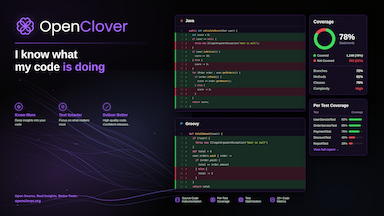

Buy the official OpenClover digital wallpaper — a 4K resolution (3840×2160) digital image, delivered as an instant download, for a fixed price you choose from the options below. It is a small, beautifully designed digital product, and buying it is also a great way to support the free, open-source OpenClover project.

OpenClover is maintained by volunteers in their spare time, and running it costs real time and money every year — development time, website hosting, IDE licences and tooling. Every wallpaper purchase helps cover those costs and keeps OpenClover free and open-source. Thank you for supporting the project by buying the wallpaper.
OpenClover is a fork of Atlassian Clover®, which was one of the most advanced commercial code coverage tools on the market before Atlassian open-sourced it. When it was still sold commercially, Atlassian Clover® licences started at:
You are getting a professional-grade tool at no cost. Picking up the wallpaper for a one-time €5 is a token of appreciation many of us can afford.
Just a single test optimization feature alone can cut the time spent waiting for tests to complete dramatically. Here is a conservative estimate for a single developer:
| Annual developer salary | $100,000 |
| Working days per year | 220 |
| Cost per minute of developer time | ≈ $0.95 |
| Test suite runs per day | 5 |
| Average test suite duration | 5 minutes |
| Time in tests per year | 92 hours |
| Time saved with 70% optimization | 64 hours ≈ $3,600/year |
And the OpenClover offers way more features - heat maps, top risks, quick wins, class-to-test mapping, code metrics - just to name a few!
Accurate, per-test coverage reports reveal redundant tests and coverage gaps. Teams that act on this data routinely reduce test count by 10–30% while improving overall coverage — cutting both CI time and maintenance burden.
Uncovered code is where bugs hide. Research consistently shows that a bug found during coding costs 5–10× less to fix than the same bug discovered in production. OpenClover makes uncovered code impossible to ignore.
A live coverage map gives teams the confidence to refactor aggressively, knowing exactly which paths are exercised and which are not. Better code structure means lower long-term maintenance cost.
OpenClover has thousands of active users, based on downloads statistics. If just 1 in 10 bought the wallpaper once a year, that would be enough to sponsor one full-time engineer dedicated to OpenClover development. Imagine what that engineer could build for the whole community.
Checkout is 100% handled by Stripe — a leading world platform for online payments. Pick the price option you like, complete the secure checkout, and you will receive your digital OpenClover wallpaper as a download.
Thank you for using OpenClover and for picking up the wallpaper. Your support makes a real difference.